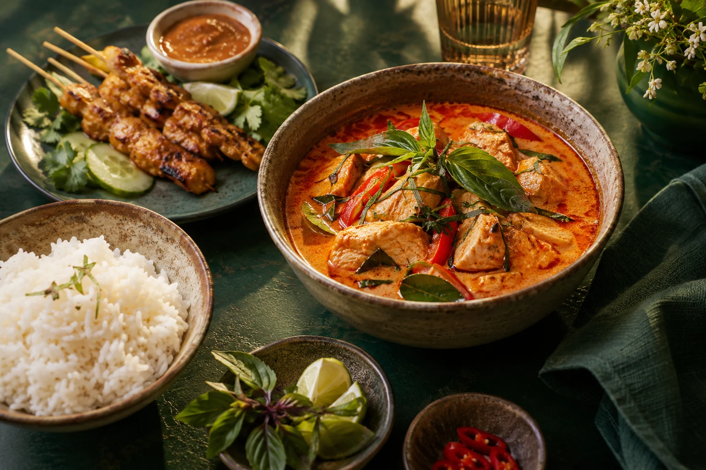

Kyckling · Nr 16
Panang Gai
Kyckling, panangcurry, kokosmjölk och limeblad.
Kyckling
130krMedelstarkt
THAILÄNDSKT KÖK · STENUNGSUND
Het wok. Krämig curry. Dofter av basilika och lime. Hitta din favorit och ta med smaken hem.

Välj något gottHela avhämtningsmenyn här nedanför
Ring & beställ0303-888 83
Hämta hos ossGöteborgsvägen 2, Stenungsund
SINGHA THAI · AVHÄMTNING
En krämig curry, något från woken
eller flera smaker på samma tallrik.
Kyckling · Nr 16
Kyckling, panangcurry, kokosmjölk och limeblad.
Nudlar · Nr 40
Stekta risnudlar, ägg och malda jordnötter.
Lite av varje
Biff i panang, wokad kyckling, friterad kyckling och räkor.
Biff med panangcurry, friterad kyckling och friterade räkor med sötsur sås.
Biff med panangcurry, wokad kyckling med ostronsås, friterad kyckling och friterade räkor.
Vårrulle.
Två kycklinggrillspett med jordnötssås.
Räksoppa med kokosmjölk, chilipasta och limejuice.
Kycklingsoppa med kokosmjölk och limejuice.
Kycklinggrillspett med jordnötssås.
Fläskgrillspett med jordnötssås.
Kycklingfilé och fläskfilé på spett med jordnötssås.
Stekt kycklingfilé med vitlökschili och thailändsk basilika.
Stekt kycklingfilé med thailändsk barbequesås.
Stekt kycklingfilé med sötsur chilisås.
Stekt kycklingfilé med cashewnötter.
Stekt kycklingfilé med gul curry och grönsaker.
Stekt kycklingfilé med grönsaker på thailändskt vis.
Stekt kycklingfilé med szechuan-sås och blandade grönsaker.
Kycklingfilé med grön curry, kokosmjölk och limeblad.
Kycklingfilé med panangcurry, kokosmjölk och limeblad.
Kycklingfilé med gul curry, ananas och kokosmjölk.
Kycklingfilé med röd curry, basilika och kokosmjölk.
Kycklingfilé med söt massamancurry, kokosmjölk, ingefära och jordnötter.
Friterad kycklingfilé med sötsur sås eller currysås.
Stekt biff med vitlökschili och grönsaker.
Stekt biff med thailändsk barbequesås.
Stekt biff med röd curry och thailändsk basilika.
Stekt biff med cashewnötter.
Biff med grön curry, kokosmjölk och limeblad.
Biff med röd curry, basilika, aubergine och kokosmjölk.
Biff med panangcurry, limeblad och kokosmjölk.
Biff med söt massamancurry, ingefära, jordnötter och kokosmjölk.
Stora räkor med gul curry, ananas och kokosmjölk.
Stora räkor med grön curry, kokosmjölk och limeblad.
Stekta stora räkor med thailändsk barbequesås.
Räkor, bläckfisk och krabba med vitlökschili och grönsaker.
Räkor, bläckfisk och krabba med gul curry och grönsaker.
Stekta stora räkor med vitlökschili och thailändsk basilika.
Stekta stora räkor med champinjoner och chilipasta på thailändskt vis.
Friterade stora räkor med sötsur sås eller currysås.
Friterad bläckfisk med sötsur sås eller currysås.
Friterad krabbfisk med sötsur sås eller currysås.
Friterad fisk med champinjoncurrysås.
Pad Thai innehåller ägg. Fråga oss om veganska alternativ.
Stekta risnudlar med ägg och malda jordnötter.
Wokade grönsaker med cashewnötter.
Wokade grönsaker med gul curry.
Wokade grönsaker med sötsur chilisås och ananas.
Blandade grönsaker med söt massamancurry, ingefära, kokosmjölk och jordnötter.
Blandade grönsaker med panangcurry, kokosmjölk och limeblad.
Friterade grönsaker med sötsur sås eller currysås.
Stekta grönsaker med ostronsås.
Stekt ris med kycklingfilé och räkor på thailändskt vis.
Stekta äggnudlar med kycklingfilé och räkor på thailändskt vis.
Wokad ankfilé med röd curry och thailändsk basilika.
Wokad ankfilé med thailändsk barbequesås.
Stekta revben med vitlök och svartpeppar.
Med vitlök och sambalsås.
Med grönsaker på kinesiskt vis.
Med grönsaker och sambalsås.
Med grönsaker.
Med grönsaker.
Med lök och purjolök.
Med ostronsås.
I sötsur sås.
I sötsur sås.
Stekt biff med bambuskott och friterade räkor med sötsur sås eller currysås.
Stekt kycklingfilé med grönsaker och friterad kyckling med sötsur sås eller currysås.
Stekt biff med grönsaker och kycklinggrillspett med jordnötssås.
Välj valfri rätt inom dessa kategorier som barnportion.
Välj valfri skaldjurs- eller fiskrätt som barnportion.
Prata med oss innan du beställer. Flera rätter innehåller bland annat jordnötter, nötter, ägg eller skaldjur.
Ring och ange rättens namn eller nummer.
Meny och priser från restaurangens befintliga meny. Priser kan ändras. Bekräfta vid beställning.
VI SES I STENUNGSUND
Du hittar oss på Göteborgsvägen 2.
Ring in din beställning, så ses vi här.
Ring gärna för att bekräfta tider vid helgdagar.
Förhandsvisning av Molin Design. Meny, priser och öppettider ska godkännas av restaurangen före lansering. Bilden är illustrativ.